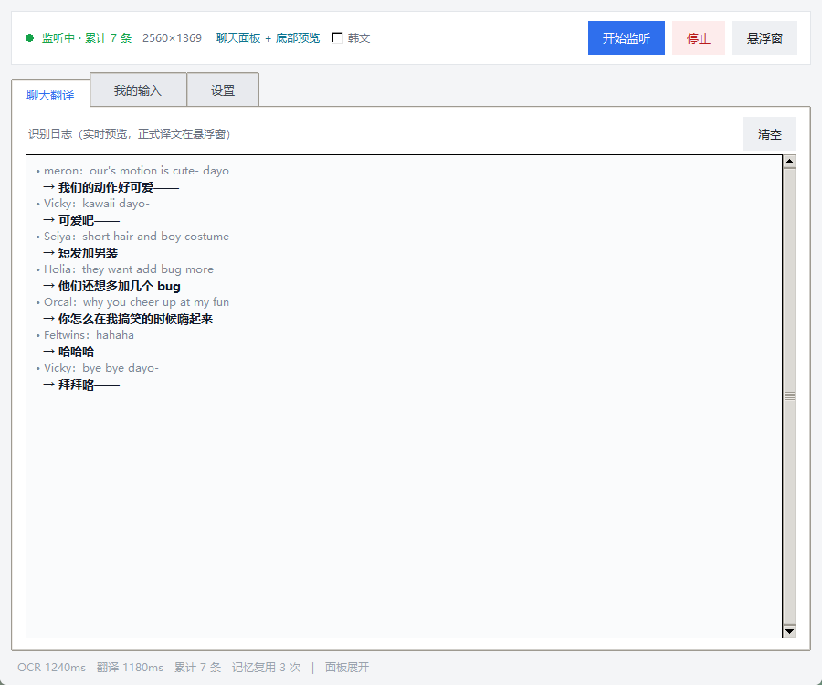
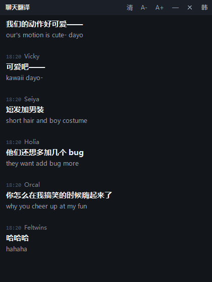
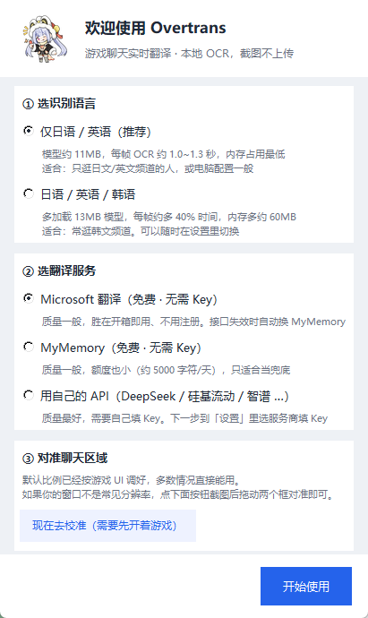

用于 OverField 快速识别翻译与回复的小工具，更好地和你的国际小朋友交流
LicenseMIT PlatformWindows 10/11 x64 Python3.13
二次元访客计数 · 004521 ← 这里的猫娘小人在 GitHub 上是会动的计数图
在游戏里逛国际服，聊天框刷得飞快、语言还各不相同。Overtrans 盯住聊天区域， 用本地 OCR 把文字认出来，再交给翻译接口，最后把中文丢进一个能挂在游戏旁边的悬浮窗。
主界面：左边实时日志（原文 + 译文），右边一键开始监听。

悬浮窗：置顶半透明，贴在游戏边上，译文加粗、原文小字。

首次启动引导：选识别语言 → 选翻译服务 → 拖框对准聊天区域。

| 双采集区 | 同时盯「聊天面板」和「底部滚动预览」；面板收起时自动切到下面那条 |
| 滚动去重 | 上下翻历史再滚回来不会重复翻译，带本地翻译记忆 |
| 表情归一 | 同一张贴纸被 OCR 切成几种花样也只算一条，不刷屏 |
| 半透明适配 | 区分「气泡里的字」和「背后场景透进来的字」，不把路人 ID 当发言 |
| 自适应降频 | 表情动画在动但内容没变 → 自动抬高阈值，不再反复 OCR |
| 韩语按需 | 韩语模型可后装，开关打开才加载（省 40% 时间 / 60MB 内存） |
到 Releases 下载 Overtrans-1.0.0-win64.zip，解压任意目录，双击 Overtrans.exe，
先开游戏再点「开始监听」。
| 服务 | 费用 | 说明 |
|---|---|---|
| Microsoft 翻译 | 免费 | 无需注册；质量一般，失效自动切下一个 |
| MyMemory | 免费 | 无需注册，按 IP 限流；质量一般，当兜底 |
| Google 翻译 | 免费 | 无需 Key，国内直连基本不通 |
| DeepSeek / 硅基流动 / 智谱 … | 有免费额度 | 质量最好，需自己填 Key |
建议：长期用就注册一个智谱（glm-4-flash 免费）或硅基流动，质量比免 Key 通道好一大截。
MIT。第三方组件许可见 THIRD_PARTY_NOTICES.md。本项目与 OverField 官方无关。